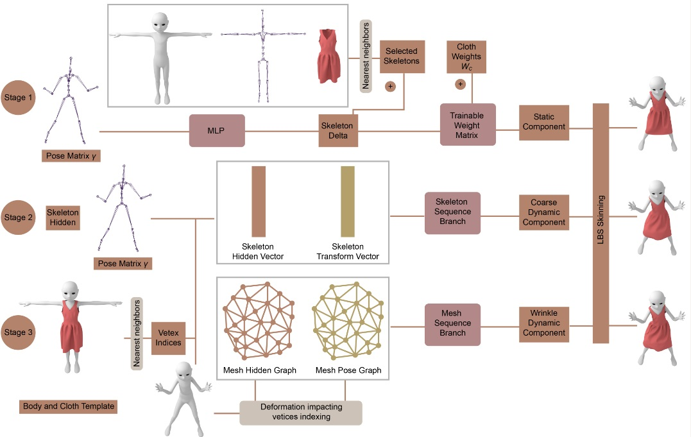
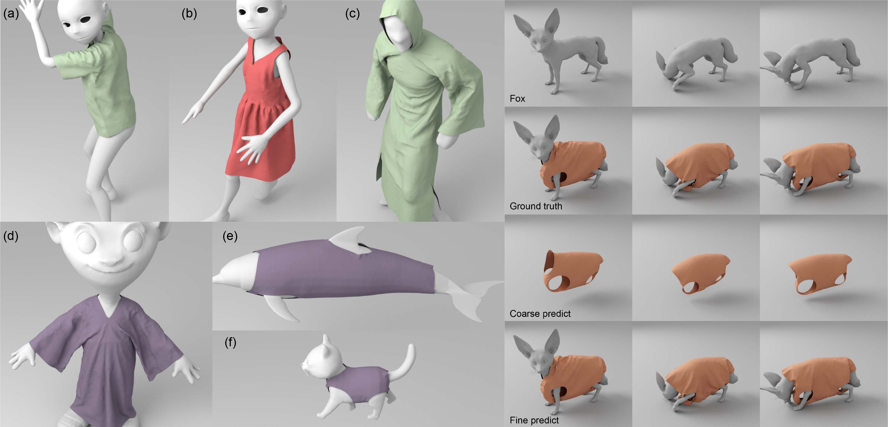
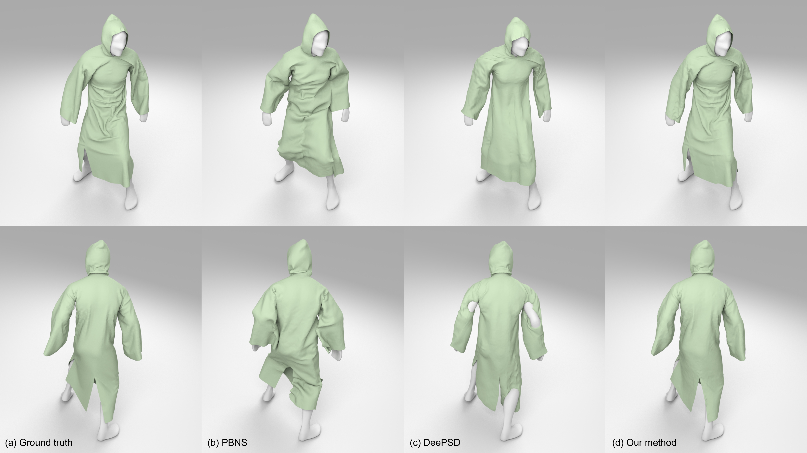

1 - Zhejiang University
2 - Tencent
Our three-stage network architecture: The static stage aims to learn a static cloth skinning model. The skeleton sequence stage and the mesh sequence stage are trained to add coarse dynamic component and wrinkle dynamic component. The serialized skeleton information and the serialized mesh information are used to add dynamics.
Abstract
We propose a three-stage network that utilizes a skinning-based model to accurately predict dynamic cloth deformation. Our approach
decomposes cloth deformation into three distinct components: static, coarse dynamic, and wrinkle dynamic components. To capture
these components, we train our three-stage network accordingly. In the first stage, the static component is predicted by constructing a
static skinning model that incorporates learned joint increments and skinning weight increments. Then, in the second stage, the coarse
dynamic component is added to the static skinning model by incorporating serialized skeleton information. Finally, in the third stage, the
mesh sequence stage refines the prediction by incorporating the wrinkle dynamic component using serialized mesh information.
We have implemented our network and used it in a Unity game scene, enabling real-time prediction of cloth dynamics. Our
implementation achieves impressive prediction speeds of approximately 3.6ms using an NVIDIA GeForce RTX 3090 GPU and 9.6ms on on
an Intel i7-7700 CPU. Compared to SOTA methods, our network excels in accurately capturing fine dynamic cloth deformations.
Results
To evaluate that our network can process more complex and different characters, we applied our network on non-human characters such as a monster, a dolphin, and a cat. The monster character has a skeleton similar to the human character, while the dolphin and the cat have different skeletons. The dolphin character has no leg joints, while the cat model has four legs without hands. We can also simulate the cloth deformation on these characters. The monster character wears a loose robe, and the dolphin and the cat wear tight-fitting clothes designed for these characters.

Paper (PDF 12.1 MB)
Video (30.9 MB) also at Youtube
Yudi Li, Min Tang, Yun Yang, Ruofeng Tong, Bailin An, Shuangcai Yang, Yao Li, Qilong Kou, D-Cloth: Skinning-based Cloth Dynamic Prediction with a Three-stage Network, conditionally accepted by Pacific Graphics, 2023.
@article{ncloth22,
author = {Li, Yudi and Tang, Min and Yang, Yun and Tong, Ruofeng and An, Bailin and Yang, Shuangcai and Li, Yao and Kou, Qilong},
title = {{D-Cloth}: Skinning-based Cloth Dynamic Prediction with a Three-stage Network},
journal = {Proceedings of Pacific Graphics 2023)},
year = {2023},
}
CTSN: Predicting Cloth Deformation for Skeleton-based Characters with a Two-stream Skinning Network
N-Cloth: Predicting 3D Cloth Deformation with Mesh-Based Networks
I-Cloth: Incremental Collision Handling for GPU-Based Interactive Cloth Simulation
PSCC: Parallel Self-Collision Culling with Spatial Hashing on GPUs
I-Cloth: API for fast and reliable cloth simulation with CUDA
Efficient BVH-based Collision Detection Scheme with Ordering and Restructuring
MCCD: Multi-Core Collision Detection between Deformable Models using Front-Based Decomposition
TightCCD: Efficient and Robust Continuous Collision Detection using Tight Error Bounds
Fast and Exact Continuous Collision Detection with Bernstein Sign Classification
A GPU-based Streaming Algorithm for High-Resolution Cloth Simulation
UNC dynamic model benchmark repository
Collision-Streams: Fast GPU-based Collision Detection for Deformable Models
Fast Continuous Collision Detection using Deforming Non-Penetration Filters
Fast Collision Detection for Deformable Models using Representative-Triangles
DeformCD: Collision Detection between Deforming Objects
Self-CCD: Continuous Collision Detection for Deforming Objects
Interactive Collision Detection between Deformable Models using Chromatic Decomposition
Fast Proximity Computation Among Deformable Models using Discrete Voronoi Diagrams
CULLIDE: Interactive Collision Detection between Complex Models using Graphics Hardware
RCULLIDE: Fast and Reliable Collision Culling using Graphics Processors
Quick-CULLIDE: Efficient Inter- and Intra-Object Collision Culling using Graphics Hardware
This work is supported in part by the National Natural Science Foundation of China under Grant No.: 61972341, Grant No.: 61972342, Grant No.: 61732015, and the Tencent-Zhejiang University joint laboratory.